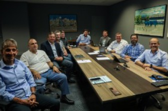

Conselho de Administração

Com o objetivo de reposicionar o Grêmio Foot-Ball Porto Alegrense em seu lugar de origem, no topo dos maiores clubes do Brasil, de resgatar a confiança e o orgulho da nação tricolor e, paralelamente, com base na transparência e em ações de compliance, buscar as decisões mais assertivas que impactam no universo do Clube, todas as segundas-feiras, a partir das 18h, o Conselho de Administração se reúne para debater assuntos voltados ao futebol, ao associado e a todos os torcedores identificados com as cores da nossa camisa. O Conselho de Administração é presidido por Alberto Guerra e formado pelos vice-presidentes Eduardo Magrisso, Fábio Floriani, Geraldo Correa, Gustavo Bolognesi, José Carlos Corrêa Duarte e Luciano Feldens.
O colegiado delibera, de forma consensual, sobre futebol e todas as nuances relacionadas a este setor, como contratações, negociações com atletas, comissão técnica, categorias de base, futebol feminino, além de recursos humanos, marketing, quadro social e relacionamento com os associados, loja GrêmioMania, licenciamento, governança, planejamento estratégico, entre outros. Participam também das reuniões do Conselho de Administração, o vice de futebol Paulo Caleffi, o assessor da presidência Alexandre Rossato e o secretário do Conselho de Administração, Rodrigo Karan.